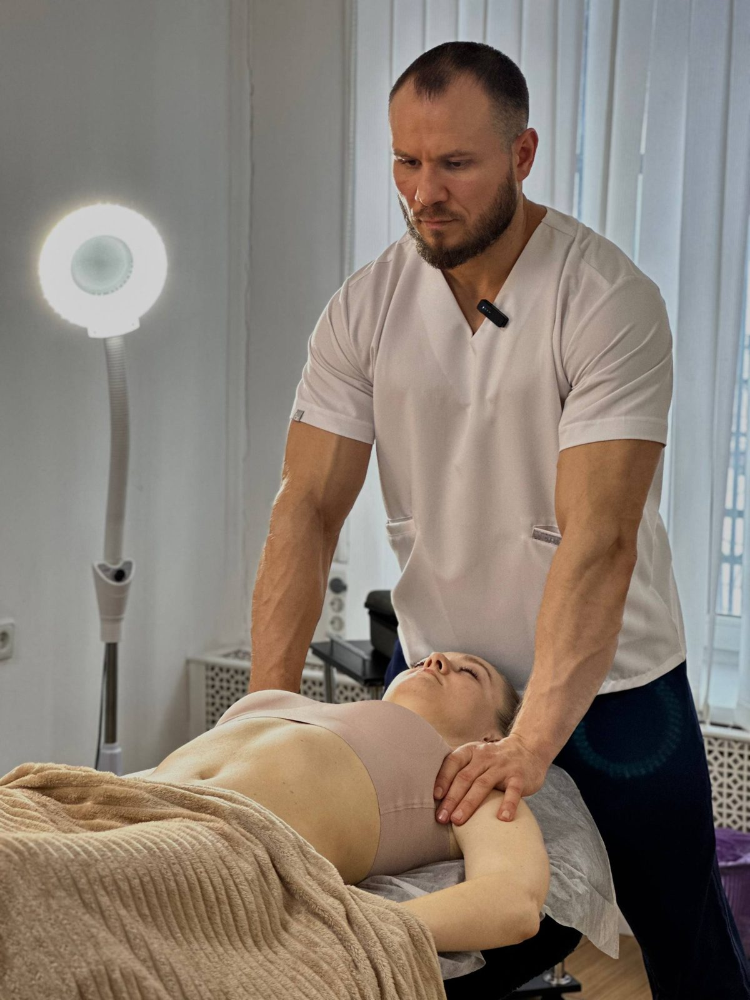
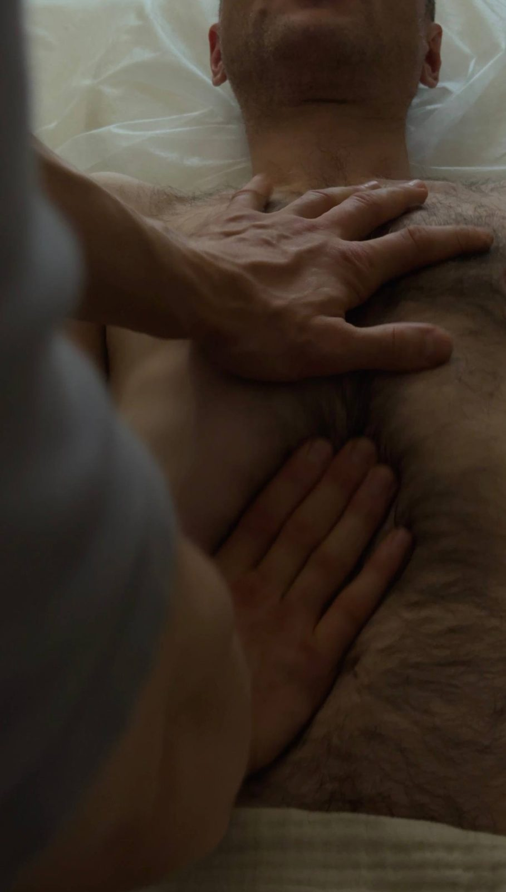
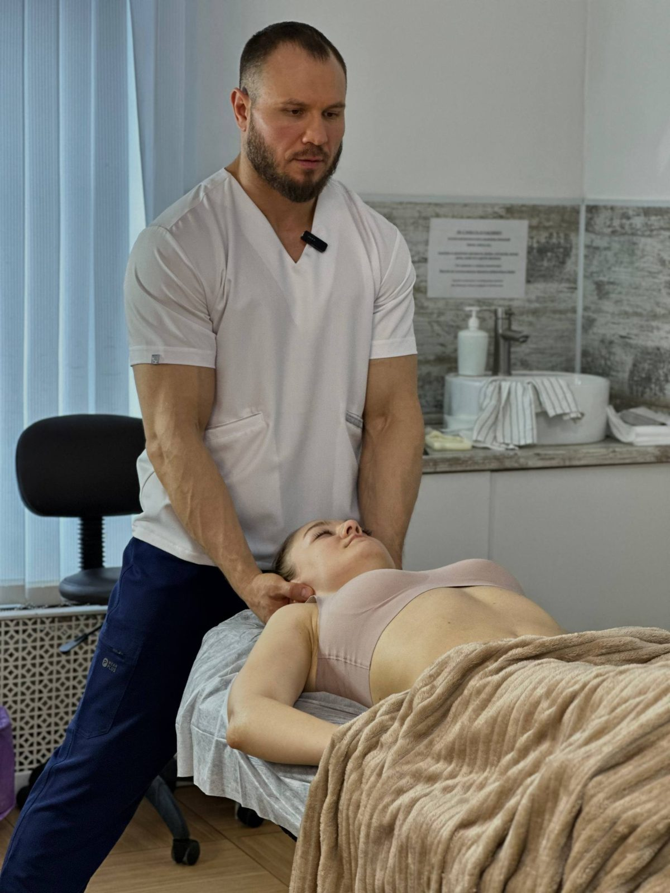
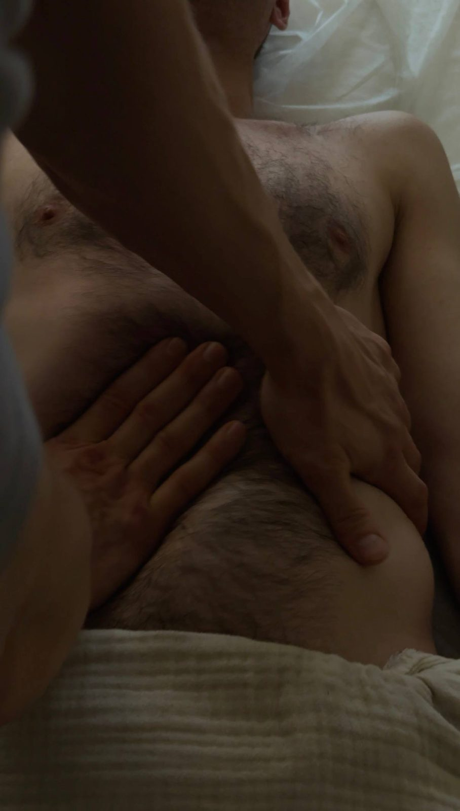

Шаг 1

Рацион питания
10 правил питания при проблемах с ЖКТ: как разгрузить пищеварение и вернуть лёгкость без диет.
1 490 ₽Читать
Методичка · шаг 2 из 5
Освойте технику, которой я пользуюсь сам: руки или лопатка для самомассажа — всё, что нужно, чтобы поддерживать внутренние органы в тонусе.
1 990 ₽ единоразово, материал остаётся у вас
Оплата картой или через СБП. Сразу после оплаты файл придёт вам на почту, чек — автоматически.

Я висцеральный терапевт и ежедневно вижу: причина большинства проблем с желудком, кишечником, печенью и жёлчным пузырём лежит не в еде, а в хроническом напряжении. Но что делать, если нет времени или возможности посещать сеансы регулярно? Ответ прост: освойте самомассаж живота. Это эффективный, безопасный и доступный каждому способ поддерживать внутренние органы в тонусе. Ваши руки или специальная лопатка для самомассажа — всё, что нужно.
Пищеварительный процесс — тонкая симфония, где каждый инструмент должен звучать слаженно. Его качество определяют три ключевых фактора:
Именно дисбаланс в этих трёх звеньях приводит к тяжести, вздутию, запорам и дискинезии. Самомассаж воздействует на все три точки одновременно.
Регулярный самомассаж — не просто приятная процедура. Это глубинная работа, которая:
Напишите мне в WhatsApp — отвечу лично и после оплаты сразу пришлю методичку. Останетесь с вопросами — помогу разобраться.
1 990 ₽
Другие темы
Все методички собраны в одну систему — начните с той темы, которая ближе.

10 правил питания при проблемах с ЖКТ: как разгрузить пищеварение и вернуть лёгкость без диет.

30-дневная система против отёков и вздутия: нутрицевтики, ферменты, сорбенты и упражнения.

Домашнее очищение печени и жёлчного пузыря: три вида тюбажей и работа с блуждающим нервом.